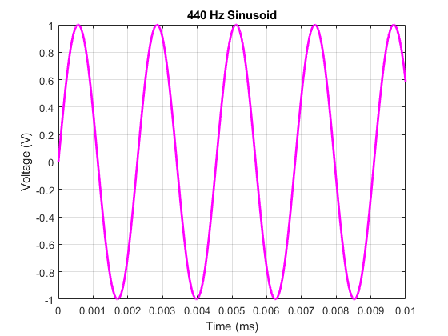

fs = 10e5; % “fs” is sampling frequency f0 = 440; % “f0” is the frequency (in Hz) of the sinusoid A = 1; % “A” is the amplitude of the sinusoid, 1.0 Volts Ts = 1/fs; % “Ts” is the time between samples dur = 1/f0 * 1e1; % “dur”ation for 1000 periods of f0 N = fs*dur; % “N” is the number of samples of the sinusoid for duration t = 0:Ts:(N-1)*Ts; % “t” is the time vector (StartTime:StepSize:StopTime) s1 = A.*sin(2*pi*f0*t) ; % “s1” is our signal vector (a 440 Hz sinusoid) plot(t,s1,'m-','linewidth',2) % These plot options produce lines of different % colors/styles, as well as a thicker line that’s % easier to see. axis([0 10e-3 -1 1]) % Sets the amount of the waveform that’s visible % in the figure window so that you don’t get a % big blue (or pink, in this case) blob. Suggest % setting xmax to 10 ?s or less. xlabel("Time (ms)") % All figures should have meaningful titles ylabel("Voltage (V)") % and axes labels. title("440 Hz Sinusoid") grid on; %[freq, amp] = getSpectrum(A, fs);